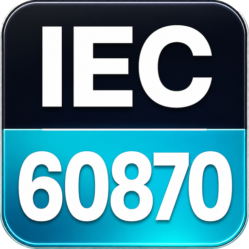

Installer · Windows x64
ARIEC60870-v3.6.10-setup-win-x64.exe
Per-user Inno Setup package for public testers. Built and verified as part of the exact release workflow.
Download installer
ArSeeIEC 60870 evidence analyzerWindows download
ArSee v3.6.10 is the latest fully packaged public release. The Windows installer and portable ZIP come from the same GitHub Release. ArSee is free and Apache-2.0 open source.
Latest stable releasev3.6.10All releases
ArSee is the product identity. Published binary filenames and the current repository URL retain ARIEC60870 until the coordinated masarray/arsee rename and website cutover.
For authorized engineering test benches; not certified for production SCADA or real SICAM interoperability. Read release scope.
ARIEC60870-v3.6.10-setup-win-x64.exe
Per-user Inno Setup package for public testers. Built and verified as part of the exact release workflow.
Download installerARIEC60870-v3.6.10-win-x64.zip
Extract the complete ZIP to a folder before running the app. Do not confuse it with GitHub's source-code ZIP.
Download portable ZIPWindows packages may be unsigned. Compare the SHA256 before opening, and follow organizational policies for unknown-publisher notices.
SPDX SBOM and build attestations are provided with the release evidence.
SHA256 checksumsThe latest complete public package is selected automatically. Earlier stable releases remain available on GitHub.
Neither release certifies every physical RTU or IEC conformance.
Previous releasesQuick first run
Use an authorized simulator or isolated endpoint. Do not modify RTS/DTR or reset a production RTU for convenience.
Release credibility
The v3.6.10 Windows release workflow verifies the published application, installer, ZIP, checksums, SBOM, provenance and WPF evidence. Draft IEC-101 transaction/FCB work is not included in v3.6.10; independent physical FAT remains required.